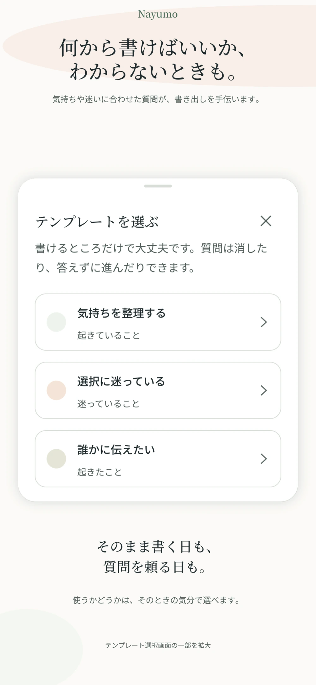
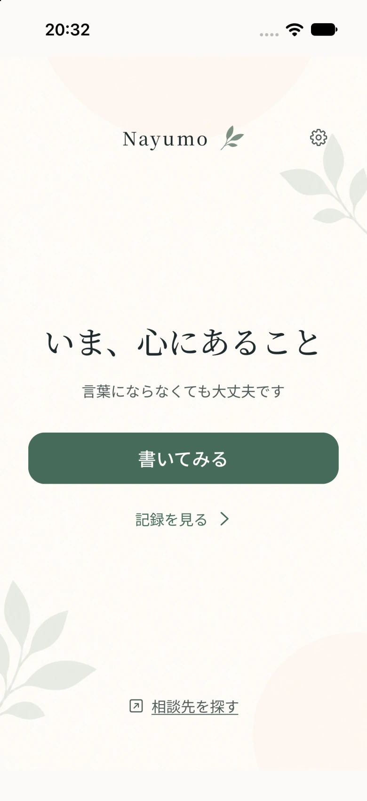
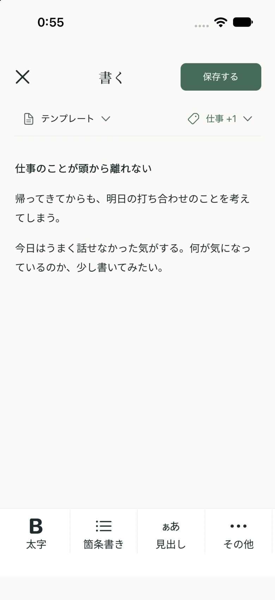
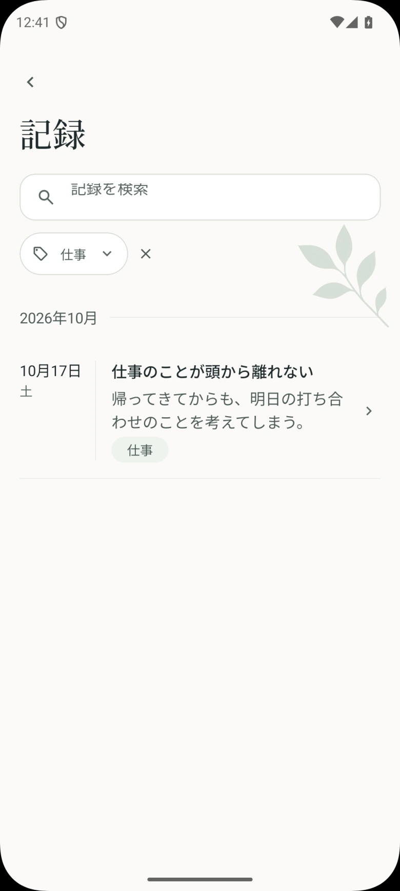
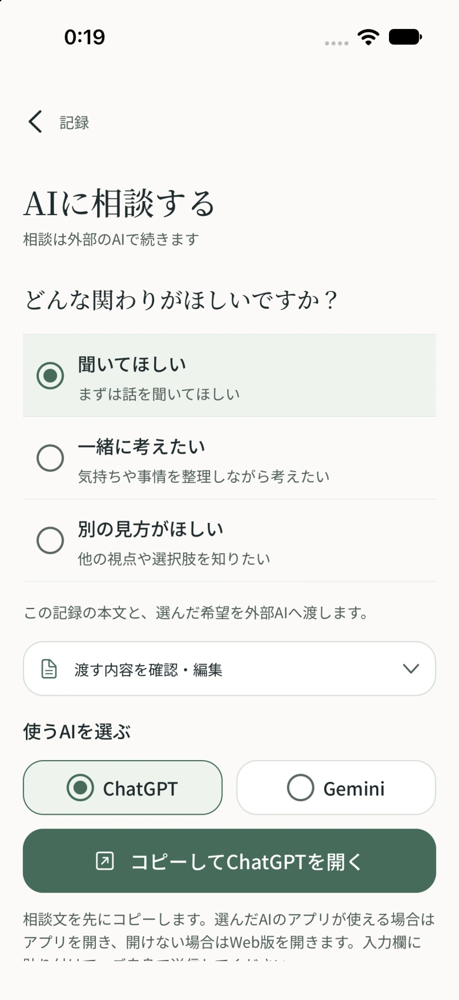

まとまらないまま、
書く。
自由に書いても、質問を頼っても。
気持ちや迷いに合ったテンプレートが、
書き出しを手伝います。

Nayumoは、悩みや気持ちを書いて、いったん置いておくためのメモアプリです。答えが出ない日も、そのまま残せます。


うまくまとめなくて大丈夫。
一言から、自分のペースで。
自由に書いても、質問を頼っても。
気持ちや迷いに合ったテンプレートが、
書き出しを手伝います。

答えが出ていなくても、そのまま保存。
一言だけでも、長い文章でも。
書き終えるタイミングは、自分で。
残した記録は、検索やタグで探せます。
ホームに過去の本文は並べず、
今の気持ちから、また始められます。


聞いてほしい。一緒に考えたい。別の見方がほしい。
その日の希望を添えて、相談文を準備できます。
相談は外部AIで行います。内容の貼り付けと送信は、ご自身で操作します。外部サービスの利用条件・料金が別途適用される場合があります。
書いた記録は、お使いの端末内に保存します。外部AIへ渡す文章は、ご自身で選んで確認できます。
生体認証や端末のパスコードを使うアプリロックに対応。設定から、自分に合った保護を選べます。
アプリを開いたときは、今の気持ちから。過去の本文は、記録を開いて見返せます。
広告配信や外部AIの利用には通信が発生します。詳しくはプライバシーポリシーをご確認ください。
悩みや気持ちを書いて、いったん置いておくためのメモアプリです。テンプレート、タグ・検索、外部AIへの相談文づくりに対応しています。医療的な診断・治療を目的としたアプリではありません。
無料で使えます。
相談自体はChatGPT・Geminiなどの外部AIで行います。Nayumoで相談の希望を選び、文章を確認・編集してからコピーし、外部AIに貼り付けて送信します。
Nayumoがメモを自動で外部AIに送信することはありません。相談文を確認したうえで、ご自身でコピー・貼り付け・送信を行います。外部AIへ送信した内容の取り扱いには、そのサービスのポリシーが適用されます。
メモを書くことや、端末内に保存した記録を見返すことはオフラインでもできます。広告配信、外部AIやサポートページなどの利用にはインターネット接続が必要です。
アプリ独自のクラウド同期には対応していません。記録は端末内に保存されます。必要な記録はMarkdownやZIPで書き出せますが、別の端末への自動移行・同期ではありません。
続きは、自分のタイミングで。